nion
nionMultiple Factors - QUAL - Quality is underated
Multiple Factors - QUAL
I have done this before...
Contents
Load Data
Let's load the data from ..
load('../data_equity_list_us.mat'); load('../data_field_list.mat'); load('../data_historical_data_us.mat');
take data sample, load data & the list
index = datasample(1:1300,1000,'Replace',false);
px = fun_load_price(history_us, equity_list_us, index);
px = fun_clean_data(px);
list = equity_list_us(index,:);
load observations
grossmargin_ts = fun_load_observations(history_us, equity_list_us, index,'gm'); turnover_ts = fun_load_observations(history_us, equity_list_us, index,'turnover'); roa_ts = fun_load_observations(history_us, equity_list_us, index,'roa'); leverage_ts = fun_load_observations(history_us, equity_list_us, index,'leverage');
generate the scores.
score_leverage_ts = -fun_calculate_score(leverage_ts,list,'sectorsort',px); score_roa_ts = fun_calculate_score(roa_ts,list,'sectorsort',px); score_grossmargin_ts = fun_calculate_score(grossmargin_ts,list,'sectorsort',px); score_turnover_ts = fun_calculate_score(turnover_ts,list,'sectorsort',px); score_quality_ts = score_leverage_ts+score_roa_ts+score_grossmargin_ts+score_turnover_ts; plot(fts2mat(score_quality_ts)); snapnow; score_quality_ts = fun_combine_score(score_quality_ts); plot(fts2mat(score_quality_ts)); snapnow;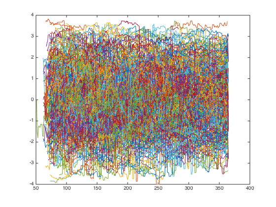 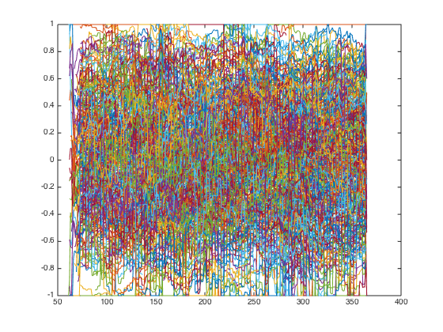
Weight*Return
portfolio_weight_ts = fun_portfolio_weight_sector_neutral(score_quality_ts,'longonly'); portfolio_longonly_rt_ts = fun_portfolio_return(px, portfolio_weight_ts); portfolio_weight_ts = fun_portfolio_weight_sector_neutral(score_quality_ts,'equalweight'); portfolio_equalweight_rt_ts = fun_portfolio_return(px, portfolio_weight_ts); plot(cumsum(portfolio_longonly_rt_ts)); legend('off'); hold on; plot(cumsum(portfolio_equalweight_rt_ts)); legend('off'); [sqrt(12)*sharpe(fts2mat(portfolio_longonly_rt_ts(50:end)),0) sqrt(12)*sharpe(fts2mat(portfolio_equalweight_rt_ts(50:end)),0)] snapnow;
ans =
0.7568 0.6160
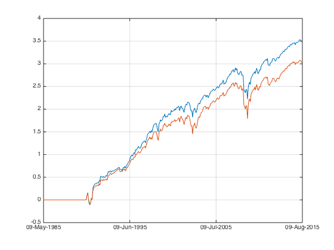 quite significant sharpe improvement..
portfolio_weight_ts = fun_portfolio_weight_sector_neutral(score_quality_ts,'longshort'); portfolio_longshort_rt_ts = fun_portfolio_return(px, portfolio_weight_ts); portfolio_weight_ts = fun_portfolio_weight_sector_neutral(score_quality_ts,'topm',0.1); portfolio_topm_rt_ts = fun_portfolio_return(px, portfolio_weight_ts); plot(cumsum(portfolio_longshort_rt_ts)); legend('off'); plot(cumsum(portfolio_topm_rt_ts)); legend('off'); hold off; snapnow; [sqrt(12)*sharpe(fts2mat(portfolio_longshort_rt_ts(50:end)),0) sqrt(12)*sharpe(fts2mat(portfolio_topm_rt_ts(50:end)),0)]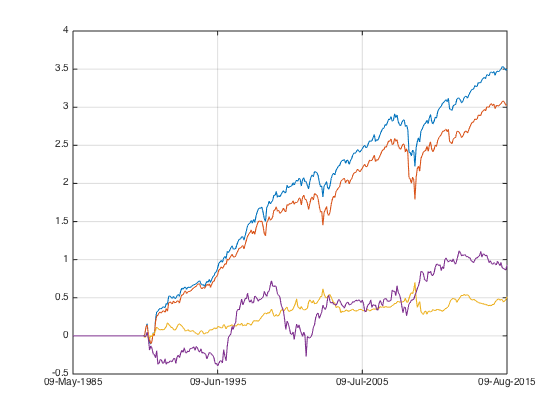
ans =
0.1989 0.1801
I like those sharpe numbers!
corrcoef(fts2mat(portfolio_longshort_rt_ts(50:end)), fts2mat(portfolio_equalweight_rt_ts(50:end))) corrcoef(fts2mat(portfolio_topm_rt_ts(50:end)), fts2mat(portfolio_equalweight_rt_ts(50:end)))
ans =
1.0000 -0.5199
-0.5199 1.0000
ans =
1.0000 -0.0298
-0.0298 1.0000
negative correlation with long short! I like those correlation numbers!
Sequential test
give me my benchmark
portfolio_weight_eq_weight_ts = fun_portfolio_weight_sector_neutral(score_quality_ts,'equalweight'); portfolio_rt_ts = fun_portfolio_return(px, portfolio_weight_eq_weight_ts); benchmark = [100; 100*exp(fts2mat(cumsum(portfolio_rt_ts)))]; benchmark_ts = fints(px.dates, benchmark,'EqualWeightIndex'); plot(log(benchmark_ts)); legend('off'); hold on;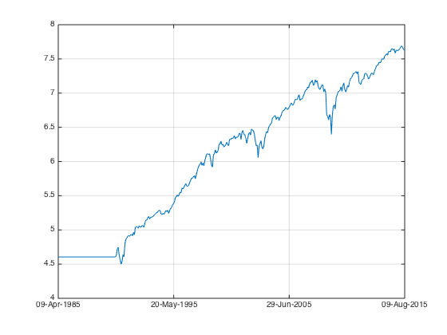
let's rock
portfolio_weight_ts = fun_portfolio_weight_sector_neutral(score_quality_ts,'topmlongonly',1); portfolio_cap_ts = fun_sequential_backtest_autoadjust(100, px, benchmark_ts, portfolio_weight_ts,false); plot(log(portfolio_cap_ts)); legend('off'); sqrt(12)*sharpe(fts2mat(tick2ret(portfolio_cap_ts(70:end))),0) corrcoef(fts2mat(tick2ret(portfolio_cap_ts(70:end))), fts2mat(tick2ret(benchmark_ts(70:end)))) portfolio_weight_ts = fun_portfolio_weight_sector_neutral(score_quality_ts,'longonly'); portfolio_cap_ts = fun_sequential_backtest_autoadjust(100, px, benchmark_ts, portfolio_weight_ts,false); plot(log(portfolio_cap_ts)); legend('off'); sqrt(12)*sharpe(fts2mat(tick2ret(portfolio_cap_ts(70:end))),0) corrcoef(fts2mat(tick2ret(portfolio_cap_ts(70:end))), fts2mat(tick2ret(benchmark_ts(70:end)))) portfolio_weight_ts = fun_portfolio_weight_sector_neutral(score_quality_ts,'topmlongonly',0.3); portfolio_cap_ts = fun_sequential_backtest_autoadjust(100, px, benchmark_ts, portfolio_weight_ts,false); plot(log(portfolio_cap_ts)); legend('off'); sqrt(12)*sharpe(fts2mat(tick2ret(portfolio_cap_ts(70:end))),0) corrcoef(fts2mat(tick2ret(portfolio_cap_ts(70:end))), fts2mat(tick2ret(benchmark_ts(70:end)))) hold off; snapnow;
ans =
0.6806
ans =
1.0000 -0.2550
-0.2550 1.0000
ans =
0.5369
ans =
1.0000 -0.2928
-0.2928 1.0000
ans =
0.4807
ans =
1.0000 -0.3047
-0.3047 1.0000
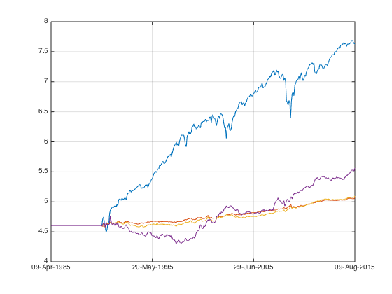 correlation is negative oh....
let's check on partial hedge.
something to compare to..
portfolio_weight_ts = fun_portfolio_weight_sector_neutral(score_quality_ts,'longonly'); portfolio_cap_ts = fun_sequential_backtest_autoadjust(100, px, benchmark_ts, portfolio_weight_ts,false); plot(log(portfolio_cap_ts)); legend('off'); hold on; sqrt(12)*sharpe(fts2mat(tick2ret(portfolio_cap_ts(70:end))),0) corrcoef(fts2mat(tick2ret(portfolio_cap_ts(70:end))), fts2mat(tick2ret(benchmark_ts(70:end))))
ans =
0.5369
ans =
1.0000 -0.2928
-0.2928 1.0000
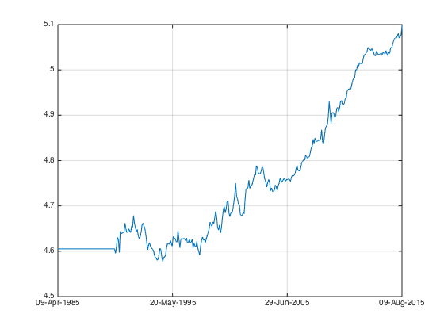 going partial.
capital neutral.
portfolio_weight_ts = fun_portfolio_weight_sector_neutral(score_quality_ts,'longonly'); portfolio_cap_ts = fun_sequential_backtest_partial(100, px, benchmark_ts,1, portfolio_weight_ts,false); plot(log(portfolio_cap_ts)); legend('off'); hold on; sqrt(12)*sharpe(fts2mat(tick2ret(portfolio_cap_ts(70:end))),0) corrcoef(fts2mat(tick2ret(portfolio_cap_ts(70:end))), fts2mat(tick2ret(benchmark_ts(70:end))))
ans =
0.4240
ans =
1.0000 -0.4079
-0.4079 1.0000
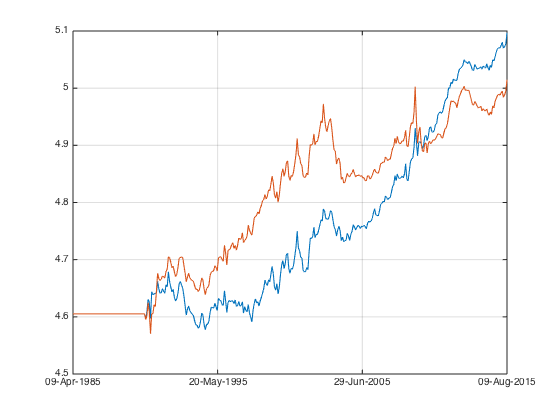 target for 0 correlation
portfolio_weight_ts = fun_portfolio_weight_sector_neutral(score_quality_ts,'longonly'); portfolio_cap_ts = fun_sequential_backtest_partial(100, px, benchmark_ts,0.9, portfolio_weight_ts,false); plot(log(portfolio_cap_ts)); legend('off'); hold on; sqrt(12)*sharpe(fts2mat(tick2ret(portfolio_cap_ts(70:end))),0) corrcoef(fts2mat(tick2ret(portfolio_cap_ts(70:end))), fts2mat(tick2ret(benchmark_ts(70:end))))
ans =
0.8496
ans =
1.0000 0.0692
0.0692 1.0000
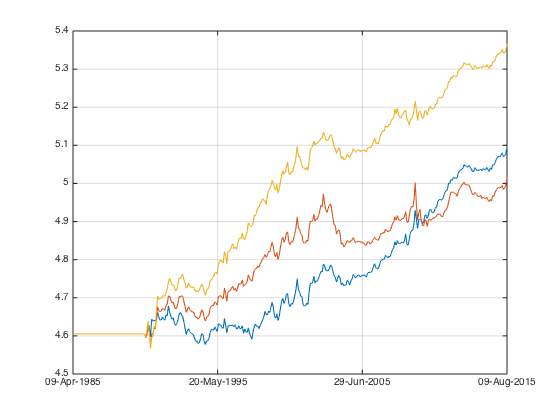 top 0.3 target for 0 correlation (score nolonger distributed evenly between[-1 1] after combination.
portfolio_weight_ts = fun_portfolio_weight_sector_neutral(score_quality_ts,'topmlongonly',0.3); portfolio_cap_ts = fun_sequential_backtest_partial(100, px, benchmark_ts,0.9, portfolio_weight_ts,false); plot(log(portfolio_cap_ts)); legend('off'); hold on; sqrt(12)*sharpe(fts2mat(tick2ret(portfolio_cap_ts(70:end))),0) corrcoef(fts2mat(tick2ret(portfolio_cap_ts(70:end))), fts2mat(tick2ret(benchmark_ts(70:end))))
ans =
0.8605
ans =
1.0000 0.1366
0.1366 1.0000
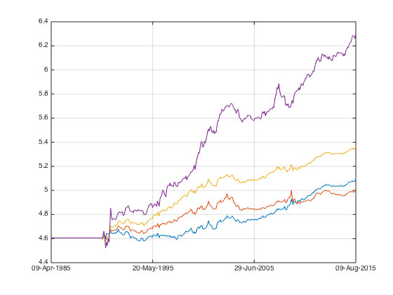 correlation down to 0.
plot(log(benchmark_ts)); legend('off'); hold off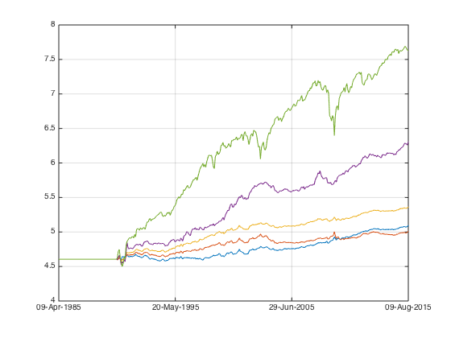
Remarks on QUAL
similar to BAB, risk adjusted factor portoflio doesn't really make it uncorrelated to the market. this means some part of its risk is not from market but some other sources. pure quality has good drift.
AQR result seems to be constructed from capital neutral.
Large Dataset
load the big dataset
load('../Big Data/data_equity_list.mat'); load('../Big Data/data_historical_data_jan16.mat'); equity_list = equity_list(1:size(storage0,1),:); equity_list_us_large = equity_list(strcmp(equity_list(:,2),'US'),:); history_us_large = storage0(strcmp(equity_list(:,2),'US'),:); clear storage0; clear equity_list; equity_list_us_large = equity_list_us_large(not(cellfun(@isempty,history_us_large(:,1))),:); history_us_large = history_us_large(not(cellfun(@isempty,history_us_large(:,1))),:);
take data sample, load data & the list
index_large = datasample(1:8900,8001,'Replace',false);
px_large = fun_load_price_large(history_us_large, equity_list_us_large, index_large);
px_large = fun_clean_data(px_large);
list_large = equity_list_us_large(index_large,:);
load observations
grossmargin_ts = fun_load_observations_large(history_us_large, equity_list_us_large, index_large,'gm'); turnover_ts = fun_load_observations_large(history_us_large, equity_list_us_large, index_large,'turnover'); roa_ts = fun_load_observations_large(history_us_large, equity_list_us_large, index_large,'roa'); leverage_ts = fun_load_observations_large(history_us_large, equity_list_us_large, index_large,'leverage');
generate the scores.
score_leverage_ts = -fun_calculate_score(leverage_ts,list_large,'sectorsort',px_large); score_roa_ts = fun_calculate_score(roa_ts,list_large,'sectorsort',px_large); score_grossmargin_ts = fun_calculate_score(grossmargin_ts,list_large,'sectorsort',px_large); score_turnover_ts = fun_calculate_score(turnover_ts,list_large,'sectorsort',px_large); score_quality_ts_large = score_leverage_ts+score_roa_ts+score_grossmargin_ts+score_turnover_ts; plot(fts2mat(score_quality_ts_large)); snapnow; score_quality_ts_large = fun_combine_score(score_quality_ts_large); plot(fts2mat(score_quality_ts_large)); snapnow;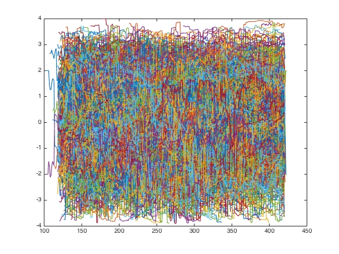 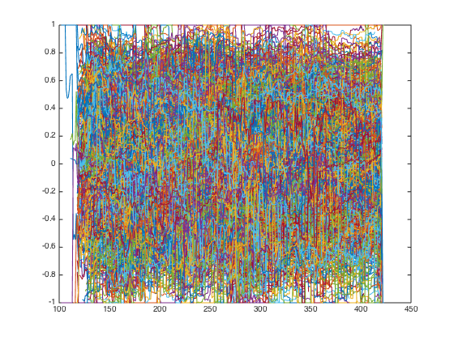
give me my benchmark
portfolio_weight_eq_weight_ts = fun_portfolio_weight_sector_neutral(score_quality_ts_large,'equalweight'); portfolio_rt_ts = fun_portfolio_return(px_large, portfolio_weight_eq_weight_ts); benchmark_large = [100; 100*exp(fts2mat(cumsum(portfolio_rt_ts)))]; benchmark_ts_large = fints(px_large.dates, benchmark_large,'EqualWeightIndex');
compare the two benchmark
plot(log(benchmark_ts)); legend('off'); hold on; plot(log(benchmark_ts_large)); legend('off'); snapnow; hold off;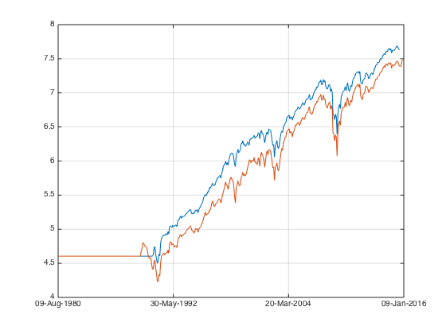
compare longonly
auto first.
1300 auto
portfolio_weight_ts = fun_portfolio_weight_sector_neutral(score_quality_ts,'longonly'); portfolio_cap_ts = fun_sequential_backtest_autoadjust(100, px(120:end), benchmark_ts(120:end),portfolio_weight_ts(120:end),false); plot(log(portfolio_cap_ts)); legend('off'); hold on; sqrt(12)*sharpe(fts2mat(tick2ret(portfolio_cap_ts)),0) corrcoef(fts2mat(tick2ret(portfolio_cap_ts)), fts2mat(tick2ret(benchmark_ts(120:end))))
ans =
0.7164
ans =
1.0000 -0.2808
-0.2808 1.0000

8900 auto
portfolio_weight_ts = fun_portfolio_weight_sector_neutral(score_quality_ts_large,'longonly'); portfolio_cap_ts = fun_sequential_backtest_autoadjust(100, px_large(120:end), benchmark_ts_large(120:end),portfolio_weight_ts(120:end),false); plot(log(portfolio_cap_ts)); legend('off'); sqrt(12)*sharpe(fts2mat(tick2ret(portfolio_cap_ts)),0) corrcoef(fts2mat(tick2ret(portfolio_cap_ts)), fts2mat(tick2ret(benchmark_ts_large(120:end))))
ans =
1.1620
ans =
1.0000 -0.2493
-0.2493 1.0000
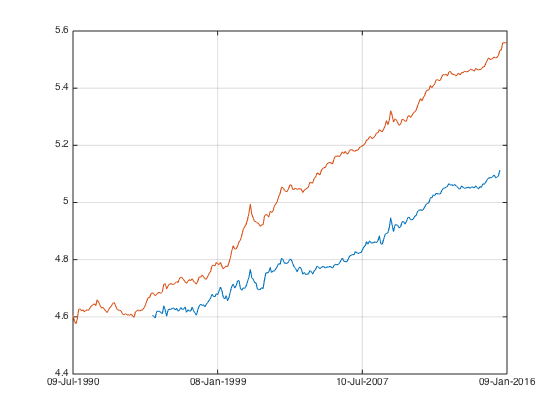 add some reference.
plot(log(benchmark_ts_large)); legend('off'); hold off; snapnow;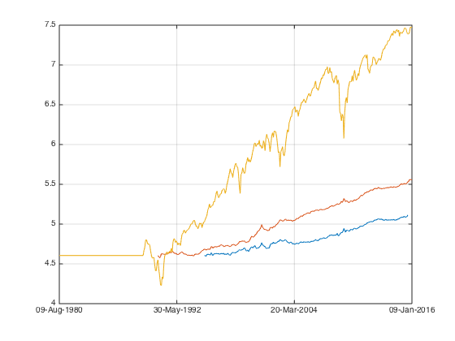
the correlation is still negative though. let's take a look at partial
portfolio_weight_ts = fun_portfolio_weight_sector_neutral(score_quality_ts,'longonly'); portfolio_cap_ts = fun_sequential_backtest_partial(100, px(70:end), benchmark_ts(70:end),0.91,portfolio_weight_ts(70:end),false); plot(log(portfolio_cap_ts)); legend('off'); hold on; sqrt(12)*sharpe(fts2mat(tick2ret(portfolio_cap_ts),0)) corrcoef(fts2mat(tick2ret(portfolio_cap_ts)), fts2mat(tick2ret(benchmark_ts(70:end))))
Warning: No Cash return specified. Will assume return is 0.
ans =
0.8127
ans =
1.0000 0.0177
0.0177 1.0000
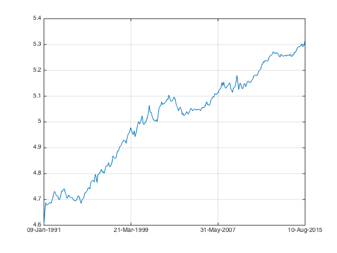 8900 partial
full capital hedged
portfolio_weight_ts = fun_portfolio_weight_sector_neutral(score_quality_ts_large,'longonly'); portfolio_cap_ts = fun_sequential_backtest_partial(100, px_large(120:end), benchmark_ts_large(120:end),1,portfolio_weight_ts(120:end),false); plot(log(portfolio_cap_ts)); legend('off'); sqrt(12)*sharpe(fts2mat(tick2ret(portfolio_cap_ts)),0) corrcoef(fts2mat(tick2ret(portfolio_cap_ts)), fts2mat(tick2ret(benchmark_ts_large(120:end))))
ans =
0.7651
ans =
1.0000 -0.4923
-0.4923 1.0000
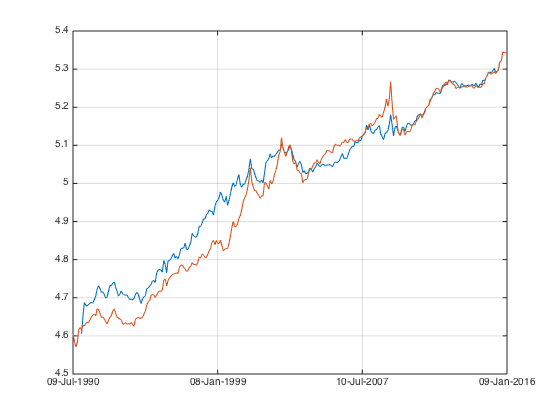 0.9 hedge ratio
portfolio_weight_ts = fun_portfolio_weight_sector_neutral(score_quality_ts_large,'longonly'); portfolio_cap_ts = fun_sequential_backtest_partial(100, px_large(120:end), benchmark_ts_large(120:end),0.9,portfolio_weight_ts(120:end),false); plot(log(portfolio_cap_ts)); legend('off'); sqrt(12)*sharpe(fts2mat(tick2ret(portfolio_cap_ts)),0) corrcoef(fts2mat(tick2ret(portfolio_cap_ts)), fts2mat(tick2ret(benchmark_ts_large(120:end))))
ans =
1.2863
ans =
1.0000 0.0879
0.0879 1.0000
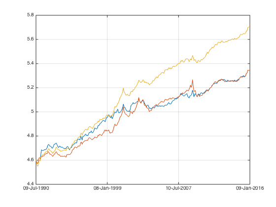 add some reference.
plot(log(benchmark_ts_large)); legend('off'); hold off; snapnow;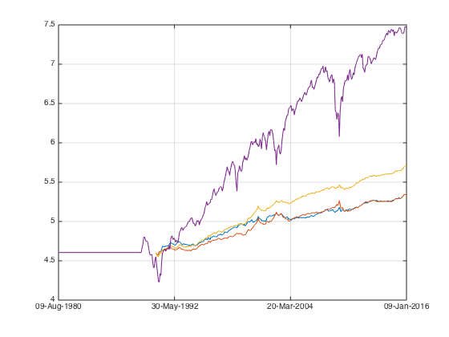
Fully hedged version is very very close to AQR published result, maybe they made a mistake. or they just intend to ?
Percentile analysis.
top N for 8900
i=1; while i<=10 portfolio_weight_ts = fun_portfolio_weight_sector_neutral(score_quality_ts_large,'topmlongonly',0.1*i); portfolio_cap_ts = fun_sequential_backtest_partial(100, px_large(120:end), benchmark_ts_large(120:end),0.9, portfolio_weight_ts(120:end),false); portplot = plot(log(portfolio_cap_ts)); portplot.Color(4) = 1 - 0.1*i; hold on; sharpe_percentile(i) = sqrt(12)*sharpe(fts2mat(tick2ret(portfolio_cap_ts)),0); corr = corrcoef(fts2mat(tick2ret(portfolio_cap_ts)), fts2mat(tick2ret(benchmark_ts_large(120:end)))); correlation(i) = corr(1,2); i = i+1; end hold off; snapnow; plot(sharpe_percentile); snapnow; plot(correlation); snapnow;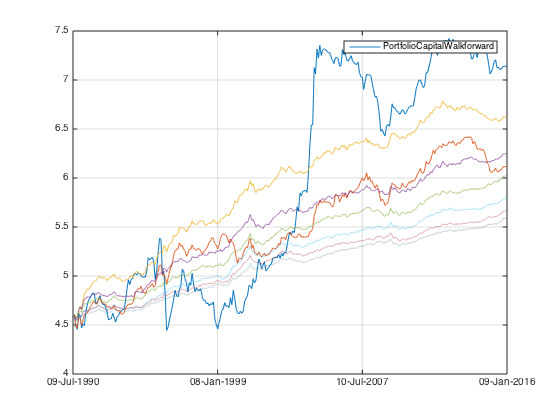 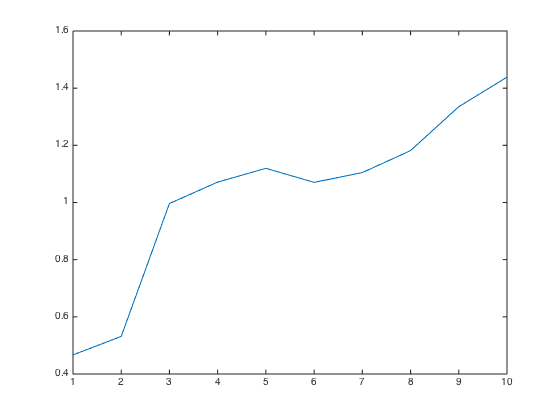 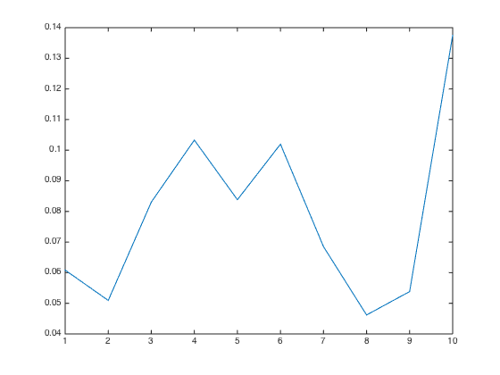
zoom in top ~1000
i=1; while i<=10 portfolio_weight_ts = fun_portfolio_weight_sector_neutral(score_quality_ts_large,'topmlongonly',0.01*i); portfolio_cap_ts = fun_sequential_backtest_partial(100, px_large(120:end), benchmark_ts_large(120:end),0.9, portfolio_weight_ts(120:end),false); portplot = plot(log(portfolio_cap_ts)); portplot.Color(4) = 1 - 0.1*i; hold on; sharpe_percentile(i) = sqrt(12)*sharpe(fts2mat(tick2ret(portfolio_cap_ts)),0); corr = corrcoef(fts2mat(tick2ret(portfolio_cap_ts)), fts2mat(tick2ret(benchmark_ts_large(120:end)))); correlation(i) = corr(1,2); i = i+1; end hold off; snapnow; plot(sharpe_percentile); snapnow; plot(correlation); snapnow;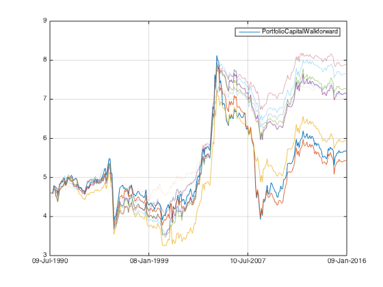 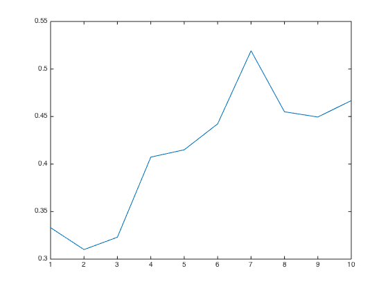 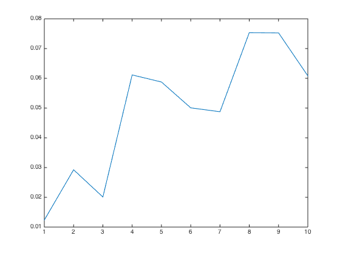
break down into percentile
i=1; while i<=10 portfolio_weight_ts = fun_portfolio_weight_sector_neutral(score_quality_ts_large,'topmnlongonly',0.01*i,0.01*(i-1)); portfolio_cap_ts = fun_sequential_backtest_partial(100, px_large(120:end), benchmark_ts_large(120:end),0.9, portfolio_weight_ts(120:end),false); portplot = plot(log(portfolio_cap_ts)); portplot.Color(4) = 1 - 0.1*i; hold on; sharpe_percentile(i) = sqrt(12)*sharpe(fts2mat(tick2ret(portfolio_cap_ts)),0); corr = corrcoef(fts2mat(tick2ret(portfolio_cap_ts)), fts2mat(tick2ret(benchmark_ts_large(120:end)))); correlation(i) = corr(1,2); i = i+1; end hold off; snapnow; plot(sharpe_percentile); snapnow; plot(correlation); snapnow;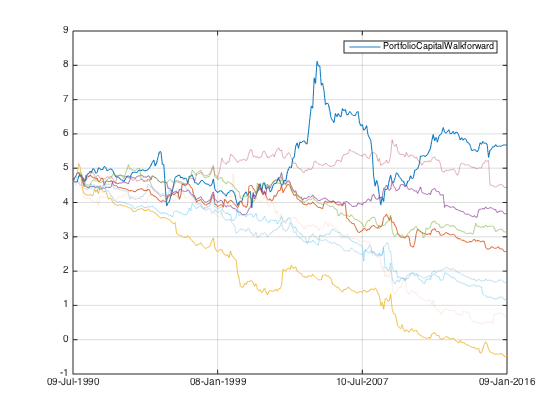 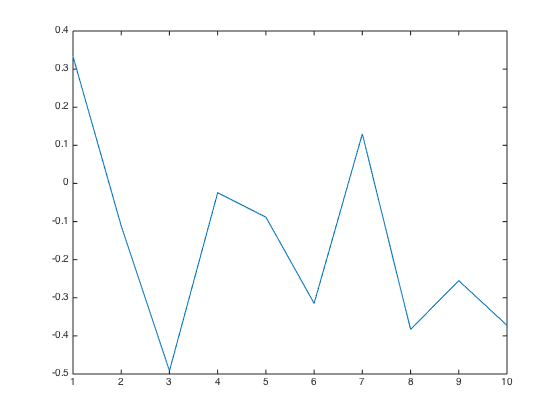 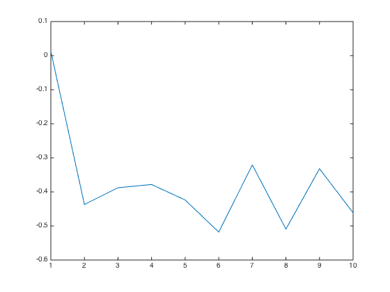
it looks like we have some anormalies in the top 100. let's take out those. and run the full percentile again.
8900 without the top 100
i=1; while i<=10 portfolio_weight_ts = fun_portfolio_weight_sector_neutral(score_quality_ts_large,'topmnlongonly',0.1*i,0.01); portfolio_cap_ts = fun_sequential_backtest_partial(100, px_large(120:end), benchmark_ts_large(120:end),0.91, portfolio_weight_ts(120:end),false); portplot = plot(log(portfolio_cap_ts)); portplot.Color(4) = 1 - 0.1*i; hold on; sharpe_percentile(i) = sqrt(12)*sharpe(fts2mat(tick2ret(portfolio_cap_ts)),0); corr = corrcoef(fts2mat(tick2ret(portfolio_cap_ts)), fts2mat(tick2ret(benchmark_ts_large(120:end)))); correlation(i) = corr(1,2); i = i+1; end hold off; snapnow; plot(sharpe_percentile); snapnow; plot(correlation); snapnow;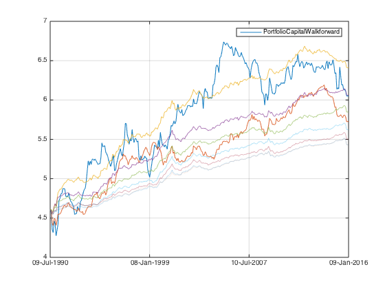 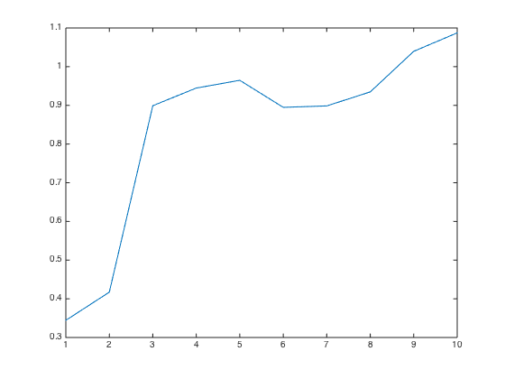 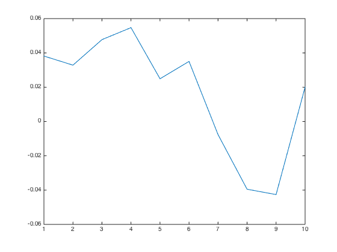
8900 each percentile
i=1; while i<=10 portfolio_weight_ts = fun_portfolio_weight_sector_neutral(score_quality_ts_large,'topmnlongonly',0.1*i,0.1*(i-1)); portfolio_cap_ts = fun_sequential_backtest_partial(100, px_large(120:end), benchmark_ts_large(120:end),0.91, portfolio_weight_ts(120:end),false); portplot = plot(log(portfolio_cap_ts)); portplot.Color(4) = 1 - 0.1*i; hold on; sharpe_percentile(i) = sqrt(12)*sharpe(fts2mat(tick2ret(portfolio_cap_ts)),0); corr = corrcoef(fts2mat(tick2ret(portfolio_cap_ts)), fts2mat(tick2ret(benchmark_ts_large(120:end)))); correlation(i) = corr(1,2); i = i+1; end hold off; snapnow; plot(sharpe_percentile); snapnow; plot(correlation); snapnow;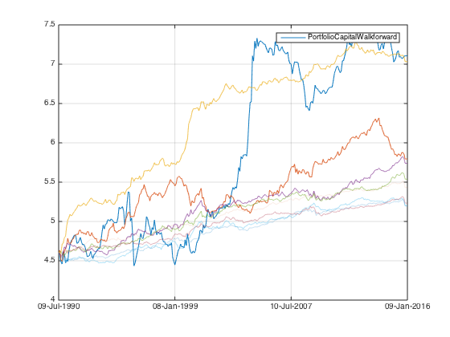 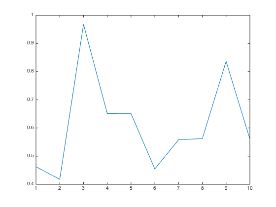 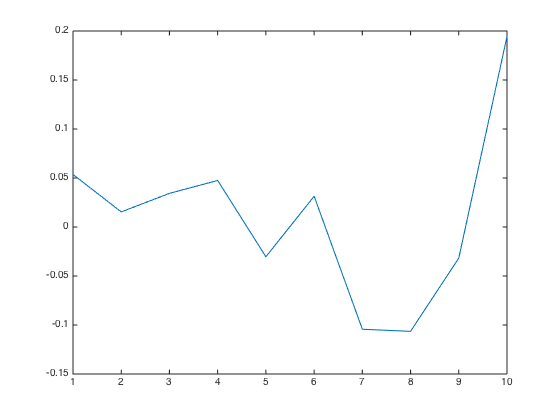
PROPER..
top N for 1300
i=1; while i<=10 portfolio_weight_ts = fun_portfolio_weight_sector_neutral(score_quality_ts,'topmlongonly',0.1*i); portfolio_cap_ts = fun_sequential_backtest_partial(100, px(70:end), benchmark_ts(70:end),0.91, portfolio_weight_ts(70:end),false); portplot = plot(log(portfolio_cap_ts)); portplot.Color(4) = 1 - 0.1*i; hold on; sharpe_percentile(i) = sqrt(12)*sharpe(fts2mat(tick2ret(portfolio_cap_ts)),0); corr = corrcoef(fts2mat(tick2ret(portfolio_cap_ts)), fts2mat(tick2ret(benchmark_ts(70:end)))); correlation(i) = corr(1,2); i = i+1; end hold off; snapnow; plot(sharpe_percentile) snapnow; plot(correlation); snapnow;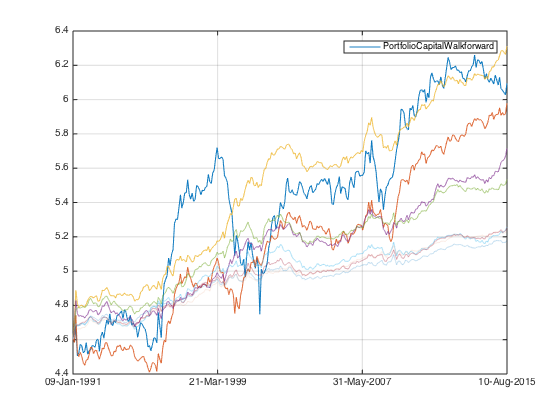 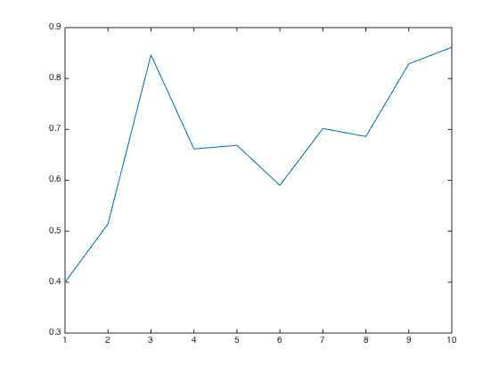 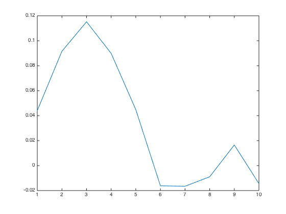
1300 each percentile
i=1; while i<=10 portfolio_weight_ts = fun_portfolio_weight_sector_neutral(score_quality_ts,'topmnlongonly',0.1*i,0.1*(i-1)); portfolio_cap_ts = fun_sequential_backtest_partial(100, px(70:end), benchmark_ts(70:end),0.91, portfolio_weight_ts(70:end),false); portplot = plot(log(portfolio_cap_ts)); portplot.Color(4) = 1 - 0.1*i; hold on; sharpe_percentile(i) = sqrt(12)*sharpe(fts2mat(tick2ret(portfolio_cap_ts)),0); corr = corrcoef(fts2mat(tick2ret(portfolio_cap_ts)), fts2mat(tick2ret(benchmark_ts(70:end)))); correlation(i) = corr(1,2); i = i+1; end hold off; snapnow; plot(sharpe_percentile) snapnow; plot(correlation); snapnow;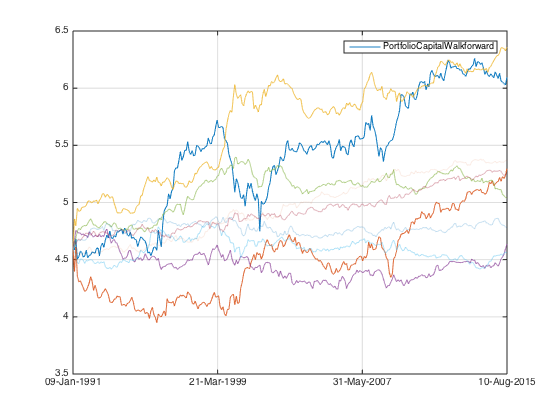 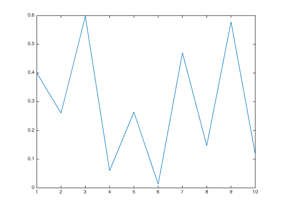 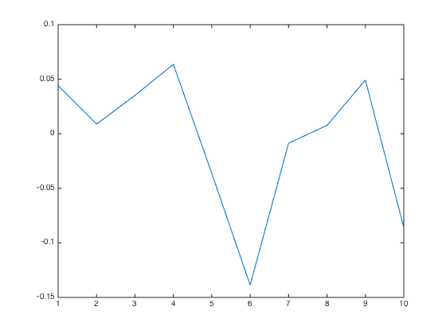